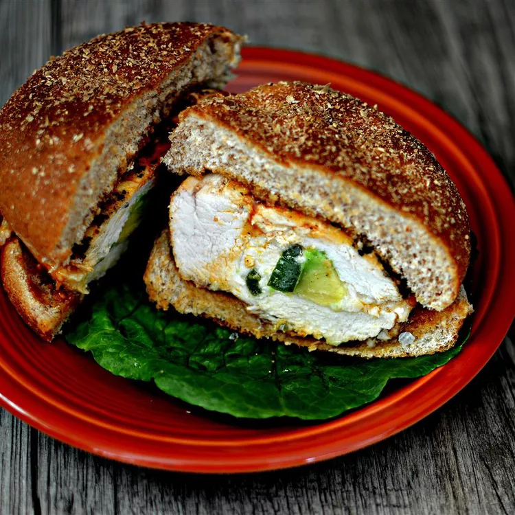

Chicken breast stuffed with slices of avocado, jalapeno pepper, and Monterey Jack cheese, served on a bun with toppings of your choice. I like mayo and tomato.
Slice a small pocket into each chicken breast with a sharp knife. Layer cheese slices, avocado slices, and sliced jalapeno inside the chicken pockets. Pinch chicken breasts closed and secure with toothpicks or skewers; place chicken into a casserole dish.
Whisk olive oil, lime juice, mesquite seasoning, and salt together in a bowl; drizzle half of the mixture over chicken breasts. Turn chicken breasts over and drizzle with remaining olive oil mixture; cover and refrigerate for 30 minutes.
Preheat an outdoor grill for high heat, and lightly oil the grate.
Place chicken breasts on preheated grill and cook for 7 minutes; turn chicken over and brush with BBQ sauce on the cooked side. Continue grilling for about 5 minutes; turn chicken over and apply BBQ sauce to the second cooked side. Cook chicken until no longer pink in the center and the juices run clear, about 2 minutes more. An instant-read thermometer inserted into the center should read at least 165 degrees F (74 degrees C).
Serve each chicken breast on a Kaiser roll.